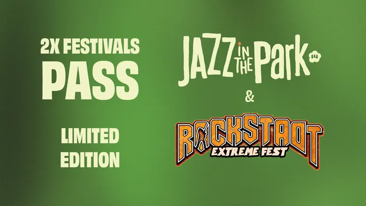

Dacă ești genul de om care ascultă death metal dimineața, dar seara preferă un vibe mult mai așezat, organizatorii s-au gândit exact la tine. Pentru ediția din 2026, există o opțiune care sparge barierele genurilor muzicale: abonamentul combo care reunește Rockstadt Extreme Fest și Jazz in the Park.
Cine a spus că trebuie să alegi? Acest pachet special îți oferă acces la două experiențe complet diferite. Începi vara cu energia brută de la poalele munților, în Ghimbav, și o închei într-o notă mult mai caldă, în cadrul idilic al Parcului Etnografic din Cluj-Napoca. Este mixul ideal pentru cei care își doresc o vară culturală completă.
Principalul motiv este, evident, economia. Achiziționarea acestui abonament dual vine cu un preț mult mai avantajos decât dacă ai cumpăra biletele separat pentru fiecare festival în parte. Este, practic, un cadou pentru urechile polivalente care știu să aprecieze atât un solo de chitară distorsionat, cât și o improvizație de saxofon sub razele apusului.
După 5 zile de praf, moshpit și intensitate maximă la Rockstadt, câteva zile de jazz reprezintă detox-ul perfect. Jazz in the Park este renumit pentru atmosfera sa relaxată, unde poți sta pe iarbă, te poți bucura de natură și poți descoperi artiști rafinați. E modul în care îți recalibrezi simțurile după haosul frumos de la Ghimbav.
Atenție însă, aceste abonamente combo nu sunt nelimitate. Sunt destinate celor care își planifică din timp escapadele de vară și care vor să se asigure că nu ratează niciunul dintre cele două evenimente de referință.
Fie că vii pentru breakdown-uri sau pentru ritmuri sincopate, vara lui 2026 se anunță a fi una a contrastelor perfecte!
Imaginile utilizate sunt preluate de pe conturile oficiale de socializare ale celor două festivaluri; nu dețin drepturi de autor asupra acestora.
If you're the type of person who listens to death metal in the morning but prefers a much more settled vibe in the evening, the organizers had you in mind. For the 2026 edition, there's an option that breaks musical genre barriers: the combo pass bringing together Rockstadt Extreme Fest and Jazz in the Park.
Who said you have to choose? This special package gives you access to two completely different experiences. Start your summer with the raw energy at the foot of the mountains in Ghimbav, and end it on a much warmer note in the idyllic setting of the Ethnographic Park in Cluj-Napoca. It's the ideal mix for those seeking a complete cultural summer.
The main reason is, obviously, savings. Purchasing this dual pass comes at a much more advantageous price than buying separate tickets for each festival. It is, essentially, a gift for versatile ears that appreciate both a distorted guitar solo and a saxophone improvisation at sunset.
After 5 days of dust, moshpits, and maximum intensity at Rockstadt, a few days of jazz represent the perfect detox. Jazz in the Park is famous for its relaxed atmosphere, where you can sit on the grass, enjoy nature, and discover refined artists. It's how you recalibrate your senses after the beautiful chaos in Ghimbav.
Beware, however, these combo passes are not unlimited. They are intended for those who plan their summer escapes in advance and want to ensure they don't miss either of these landmark events.
Whether you come for the breakdowns or the syncopated rhythms, summer 2026 promises to be one of perfect contrasts!
Images used are taken from the official social media accounts of the two festivals; I do not own the copyrights to them.